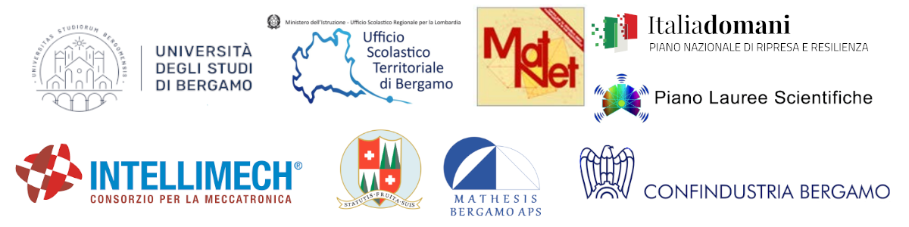

Matematica e Intelligenza Artificiale: modelli e algoritmi per le macchine che apprendono
San Pellegrino Terme, 4 - 5 - 6 Settembre 2023
La Summer School è organizzata dal gruppo di ricerca MATNET-CQIIA dell’Università degli Studi di Bergamo con l’Ufficio Scolastico Regionale per la Lombardia - Ambito Territoriale di Bergamo ed è realizzata dal Dipartimento di Ingegneria Gestionale, dell’Informazione e della Produzione dell’Università degli Studi di Bergamo nell’ambito del progetto “Orientamento attivo nella transizione scuola-università”, Piano Nazionale di Ripresa e Resilienza (PNRR), Missione 4 “Istruzione e ricerca” – Componente 1 “Potenziamento dell’offerta dei servizi all’istruzione: dagli asili nido all’Università”, con il contributo del Comune di S. Pellegrino Terme, la collaborazione dell’ISIS “Turoldo” di Zogno, dell’IS S. Pellegrino Terme, della Mathesis Bergamo, di Confindustria Bergamo e Intellimech.
L’iniziativa ha il fine di avvicinare gli studenti degli ultimi due anni delle scuole superiori a tematiche relative alle discipline scientifiche e di offrire l’opportunità di partecipare ad un’esperienza orientativa in vista della loro futura scelta post-diploma, attraverso un percorso articolato in lezioni frontali e in laboratori.
La Summer School si svolge presso il teatro del Casinò municipale di San Pellegrino e prevede un soggiorno residenziale della durata di tre giorni rivolto agli studenti ed ai loro docenti (informazioni).
Tutti i materiali di conferenze, laboratori e incontri per gli insegnanti sono reperibili nella cartella Google Drive.
Tutti i partecipanti sono invitati a compilare il Questionario di gradimento.
▸ Programma ◂
L’esperienza quotidiana ci sta rivelando l’importanza della matematica per ottenere modelli che ci permettono di interpretare la realtà, di proporre previsioni ed esplorare scenari futuri. Algoritmi, reti neurali e macchine che “apprendono” ci aiutano a scoprire le opportunità e le insidie di un mondo regolato da metodi matematico-computazionali. Attraverso l’illustrazione di recenti interessanti sviluppi sia in ambito accademico che industriale, la summer school proporrà una riflessione su come il Machine Learning consenta a macchine e robot di imparare dall’esperienza, migliorando in modo “adattivo” le loro prestazioni.
La trattazione dei vari argomenti sarà su diversi livelli di approfondimento e intende essere il più possibile precisa e rigorosa pur privilegiando un’esposizione semplice ed accessibile agli studenti del penultimo e ultimo anno delle scuole superiori. Gli studenti saranno coinvolti anche in attività laboratoriali in autonomia nelle quali saranno chiamati a sperimentare e discutere i concetti e i metodi presentati nelle conferenze. Seguendo vari percorsi gli studenti si accorgeranno che la matematica è sia un linguaggio che le altre scienze usano per descrivere modelli interpretativi della realtà sia un modo di pensare che ha una sua autonomia dalla realtà sensibile.
4 settembre 2023
| Orario | Attività |
|---|---|
| 8:45 | Benvenuto e saluti istituzionali |
| 9:00 | La matematica del machine learning |
| 11:00 | Coffee break |
| 11:15 | Le sfide dell’apprendimento statistico nell’era dei Big Data |
| 13:15 | Pausa pranzo |
| 15:00 | Per gli studenti: Attività di laboratorio Per gli insegnanti: Percorsi didattici per la secondaria di secondo grado |
5 settembre 2023
| Orario | Attività |
|---|---|
| 9:00 | Ottimizzazione e machine learning |
| 11:00 | Coffee break |
| 11:15 | Le sfide industriali dell’Intelligenza Artificiale |
| 13:15 | Pausa pranzo |
| 15:00 | Per gli studenti: Attività di laboratorio Per gli insegnanti: Percorsi didattici per la secondaria di secondo grado |
6 settembre 2023
| Orario | Attività |
|---|---|
| 9:00 | Intelligenza artificiale e modelli della mente |
| 11:00 | Coffee break |
| 11:15 | Tavola rotonda: “I nuovi modelli di business legati al Machine Learning” |
| 13:15 | Pausa pranzo |
| 15:00 | Per gli studenti: Attività di laboratorio Per gli insegnanti: Percorsi didattici per la secondaria di secondo grado |
| 17:00 | Conclusione dei lavori |
▸ Laboratori per studenti ◂
Questi laboratori sono rivolti a gruppi di studenti che saranno invitati a mettersi in gioco e a confrontarsi nella risoluzione di problemi e nella sperimentazione di fenomeni legati al mondo dell’intelligenza artificiale e machine learning. Gli studenti saranno divisi in tre gruppi. I laboratori previsti sono tre e ogni studente li potrà frequentare durante una delle tre giornate. I laboratori verranno ripetuti in parallelo durante tutti i tre pomeriggi.
Lab. 1: Statistical learning – Nel laboratorio di statistical learning per dati ambientali, gli studenti avranno la possibilità di avere un primo contatto con l’analisi di un dataset complesso. Introdurremo alcuni concetti e tecniche di base per visualizzare ed estrarre informazioni da dati rilevati in diverse località (ad esempio informazioni sull’ambiente o sulla mobilità urbana). In seguito, forniremo un dataset agli studenti e chiederemo loro di visualizzare, analizzare ed estrarre il maggior numero di informazioni possibile.
Lab. 2: Classificazione e regressione: due modelli per l’interpretazione del mondo – È possibile classificare un’automobile basandosi solamente sui suoi consumi? Come si può prevedere l’andamento della popolazione mondiale nel 2050? In tempi recenti sono state sviluppate diverse tecniche per rispondere a simili domande: nel primo caso si tratta di modelli di classificazione, mentre nel secondo di regressione. Nel corso del laboratorio si indagheranno dal punto di vista matematico i processi che stanno alla base di questi algoritmi, anche attraverso simulazioni con dati reali.
Lab. 3: Python: l’Artificial Intelligence è un gioco da ragazzi – Laboratorio interattivo per introdurre gli studenti all’utilizzo di Python. Quanta programmazione bisogna sapere per insegnare a un’automobile come guidare? Con Python e Deep Racer, un simulatore sviluppato da Amazon Web Services (AWS), nemmeno mezz’ora! Bastano solo i fondamentali di Python per iniziare a costruire un modello di "reinforcement learning", uno di quei modelli usati per insegnare ai computer come giocare a scacchi, alle Tesla come guidare da sole e a ChatGPT come fare conversazione. Quale squadra riuscirà a completare un giro nel minor tempo possibile?
▸ Percorsi didattici per insegnanti ◂
Presso Istituto Superiore San Pellegrino Terme, ore 15:00 - 17:00
4 settembre: Tavola rotonda: quale matematica per lo studente universitario? - L'apprendimento del linguaggio matematico e l'acquisizione di competenze matematiche che siano funzionali al vivere consapevolmente in una realtà sempre più complessa sono fra gli obiettivi dell'intero percorso scolastico. Gli studenti che, al termine della scuola secondaria di secondo grado, decidono di proseguire gli studi iscrivendosi a una corso di laurea in ambito scientifico, si trovano però sempre più spesso in difficoltà nell’affrontare gli esami di matematica dei primi anni. Nel corso di una tavola rotonda, docenti di scuola secondaria e di università si interrogheranno su obiettivi comuni e metodologie efficaci per fornire agli studenti che intraprendono studi universitari scientifici gli strumenti necessari per affrontare positivamente i primi anni di questo percorso. Tutto questo tenendo però anche in forte considerazione coloro che non intraprenderanno questo tipo di percorso che dovranno pertanto sviluppare solide competenze matematiche di base e un atteggiamento positivo nei confronti della matematica, che sarà un utile strumento a disposizione nella vita di tutti i giorni.
5 settembre: Oltre le fake: la scuola alla prova delle IA – La ricchezza di riferimenti offerta da internet supera di gran lunga quella di qualunque biblioteca. Ma come distinguere, e abituare a distinguere, i contenuti attendibili da quelli inattendibili? L’avvento di immagini e testi generati da intelligenze artificiali rilancia la sfida. Attraverso un laboratorio in prima persona, destinato a insegnanti di discipline scientifiche e non, scopriamo buone pratiche che consentono di restare all’erta senza cedere alle derive antitecnologiche. Per riuscire a incanalare le potenzialità dei nuovi strumenti, e accrescere al tempo stesso spirito critico e capacità di indagine di chi vi fa ricorso.
6 settembre: ChatGPT e formazione: opportunità e rischi – Quando una tecnologia diventa pervasiva nell’uso sociale, soprattutto se siamo poco consapevoli di questa pervasività, come nel caso delle tecnologie legate all’intelligenza artificiale, è bene utilizzarla a scuola in modo critico, per acquisire consapevolezza dei punti di forza e criticità, cercando di massimizzare i punti di forza e ridurre le criticità. La conferenza si propone di fornire esempi di utilizzazione di ChatGPT nell’insegnamento-apprendimento della matematica nella scuola secondaria di secondo grado che possano favorire un approccio consapevole e critico da parte degli studenti agli oggetti di studio.
▸ Informazioni ◂
Per entrare: L’accesso al teatro avverrà dall’ingresso delle Terme in viale della Vittoria, 53 e poi svoltando a sinistra. Non sarà consentito sostare nei cortili antistanti e nel retro del Casinò durante la mattinata.
Per arrivare: Per avere gli orari dei bus SAB da Bergamo a San Pellegrino e viceversa clicca qui scegliendo come Località di arrivo S.PELLEGRINO (bar Bigio).
Per pernottare: Le studentesse effettueranno il check-in direttamente al convitto femminile presso l'hotel Moderno in Piazza San Francesco d'Assisi, 31. Gli studenti effettueranno il check-in direttamente al convitto maschile presso l’Hotel Italia in via Vittorio Veneto, 39. L’accoglienza è prevista a partire dalle ore 8:00 nei rispettivi convitti, dove sarà attivo un servizio di custodia bagagli. Le camere saranno disponibili dalle ore 14. Entrambi i convitti sono facilmente raggiungibili dal parcheggio libero nelle vicinanze.
▸ Contatti ◂
Gisella Persico
Telefono: 035 284228
E-mail: ufficioscuolalavoro.bg@istruzione.it
Assistenza Summer School 2023
E-mail: matnet@unibg.it
▸ Comitato scientifico ◂
Luca Brandolini
Docente Università degli studi di Bergamo – Dipartimento DIGIP e Centro MatNet-CQIIA
Vincenzo Cubelli
Dirigente USR Ambito Territoriale di Bergamo
Francesca Maggioni
Docente Università degli studi di Bergamo – Dipartimento DIGIP, Referente Centro MatNet-CQIIA
Marco Manzoni
Vicepresidente Confindustria Bergamo
Gisella Persico
Referente USR Ambito Territoriale di Bergamo per Orientamento, PCTO, Formazione professionale e post diploma, Cultura della Sicurezza
▸ Luoghi ◂
Dove si svolgono gli incontri

Casinò municipale
Inaugurato nel 1904, è un maestoso complesso architettonico in stile Liberty. All’interno, nel vestibolo si elevano otto colonne in marmo rosso di Verona che portano al monumentale scalone con molte bellezze artistiche.
L’architetto Romolo Squadrelli studiò con perfezione le decorazioni interne, i mosaici, le balaustre e le porte. Rilevanti i pannelli del soffitto e gli altorilievi decorati a stucco. Lo scalone porta al primo piano, dove si trovano alcune grandi sale tra cui il Salone delle Feste.
Il Casinò funzionò come casa da gioco solo fino al 1917, ma ha da sempre ospitato manifestazioni culturali e teatrali, congressi, sfilate di moda, esposizioni d’arte e serate di gala. Oggi è utilizzato come hall e come ristorante/caffè del centro termale QC Terme.
